Gal Shir
Brand / IllustrationWhy they're established
Tel Aviv-based designer, illustrator and art director; former design lead at insurance unicorn Lemonade (2016-2019); creator of the widely-used design tools Color Hunt, Pose (30,000+ illustrators) and Float; large following across Dribbble, Instagram and X.
Verify · galshir.com ↗“It's over. I'm quitting design. A client of mine just created a logo with Fable 5, and the result left me speechless... My skepticism about AI's ability to do great design is officially gone.”
— Gal Shir, x.com ↗His viral July 2026 post (5.6M views) - dramatic/satirical in tone (even Figma CEO Dylan Field asked if he was serious), but a genuine, widely-discussed 'AI floored me' moment from an established designer.
John Maeda
Design + TechnologyWhy they're established
Designer-technologist; former President of the Rhode Island School of Design (RISD) and ex-Design Partner at Kleiner Perkins; author of the widely-read annual 'Design in Tech' reports and a recognized authority on design and computation.
Verify · figma.com ↗“Wow, I can make so much more art. I can sit here and use Midjourney and do all these things.”
— John Maeda, superside.com ↗
Yves Béhar
Industrial / Product DesignWhy they're established
Founder and principal designer of fuseproject, one of the most influential industrial designers of his generation, known for the OLPC laptop, Jawbone, the Herman Miller SAYL chair, and the ElliQ AI companion robot.
Verify · fuseproject.com ↗“As designers that conceive new human experiences at fuseproject, we have embraced AI, robotics and smart environments as a way to deliver simpler and deeper experiences.”
— Yves Béhar, fuseproject.com ↗

Brian Chesky
Product / Industrial DesignWhy they're established
Co-founder and CEO of Airbnb and a trained industrial designer (BFA, RISD); widely cited as proof a designer can build and lead a major technology company.
Verify · dezeen.com ↗“I'm so excited about the opportunity for AI. It feels like 2008 again when the App Store just came out, maybe like 1993, '94 with the internet, but much bigger actually, more profound.”
— Brian Chesky, printmag.com ↗
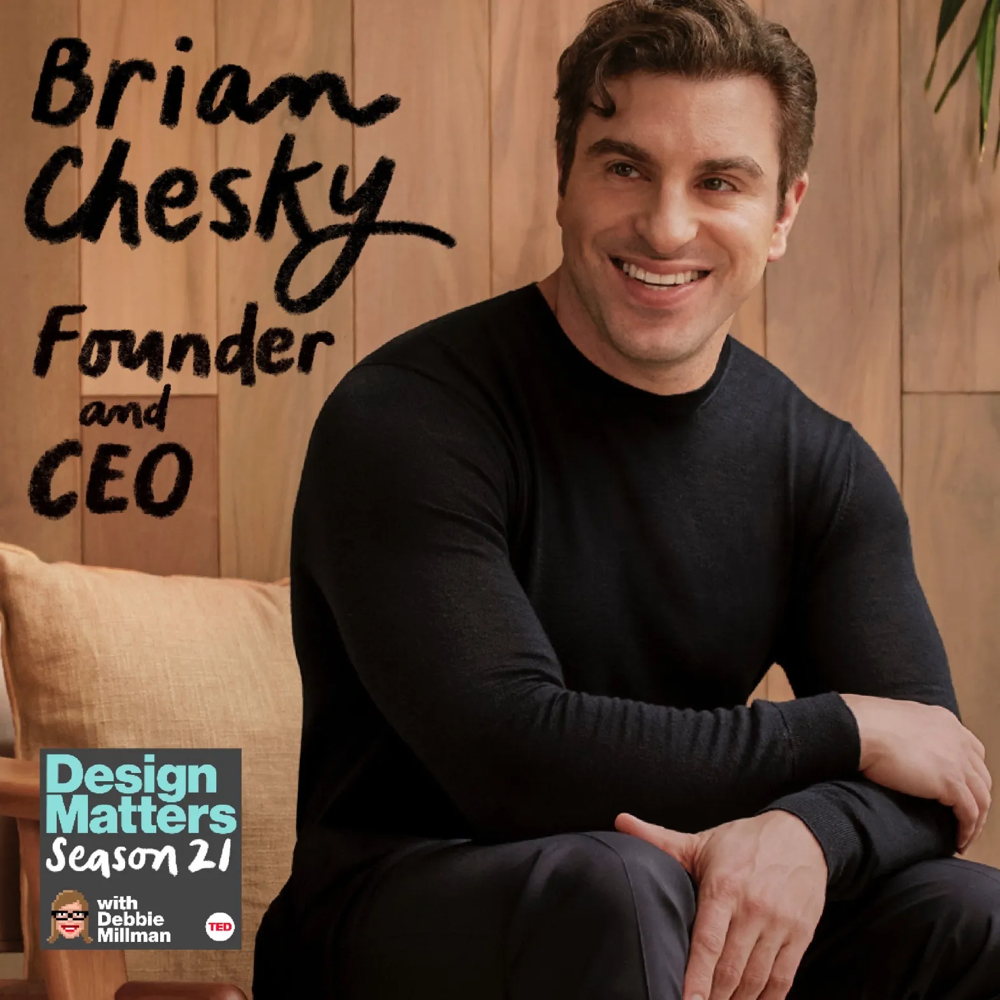
Jordan Singer
Product Design EngineeringWhy they're established
Product design engineer and founder/CEO of Diagram, an AI design-tools startup acquired by Figma in 2023; previously spent four years designing on the Cash App team at Square.
Verify · mercury.com ↗“It's a creative extension of the thoughts that I put in. It's becoming something that I don't think I can imagine living without.”
— Jordan Singer, mercury.com ↗
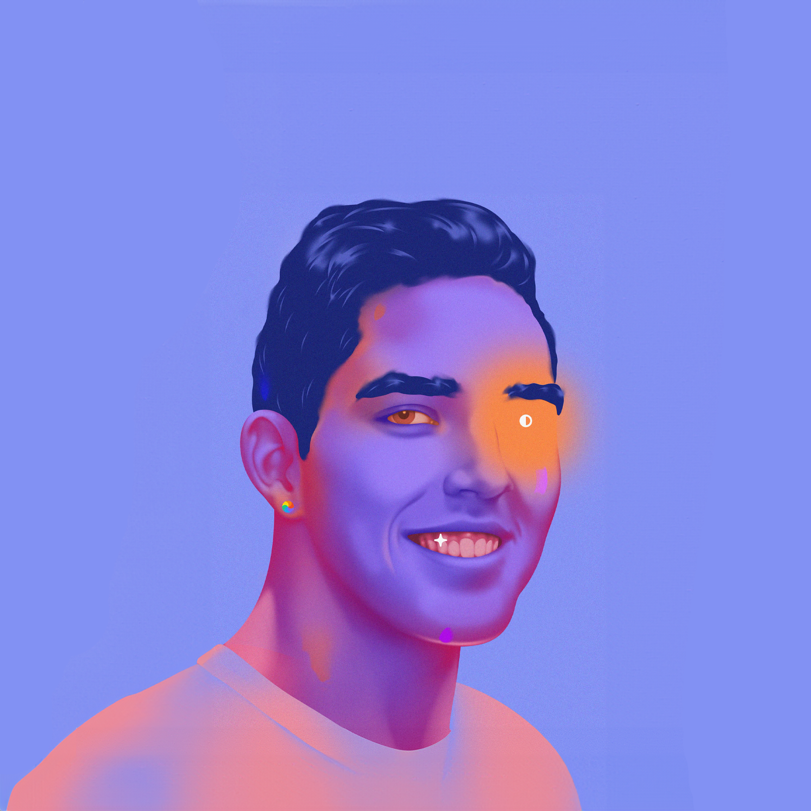
Julie Zhuo
Product / UX DesignWhy they're established
Former VP and Head of Design at Facebook (Meta), where she led a team of 100+ designers; author of the bestselling 'The Making of a Manager' and co-founder of the AI data-analysis company Sundial.
Verify · lennysnewsletter.com ↗“Why show static mocks when AI can build a version of the damn thing for your stakeholders to play with?”
— Julie Zhuo, joulee.medium.com ↗
Paula Scher
Graphic DesignWhy they're established
Partner at Pentagram (New York) since 1991 and one of the most celebrated graphic designers alive - identities for The Public Theater, Citibank, MoMA and Microsoft; AIGA Medal recipient. In 2025 her team built the federal Performance.gov site using a Midjourney-trained library of 1,500+ icons.
Verify · en.wikipedia.org ↗“We will use the best tools available to us to accomplish the ideas we have. The definition of design in the dictionary is 'a plan.' We created a plan, and it was based around the fact that this would be self-sustaining.”
— Paula Scher, gdusa.com ↗
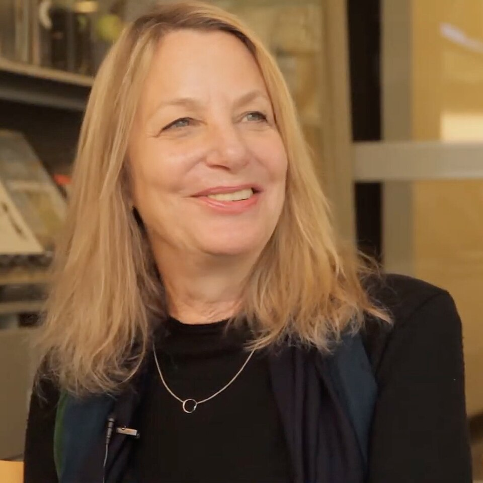
Jessica Walsh
Brand / AgencyWhy they're established
Founder and creative director of the New York agency &Walsh (clients include Barneys, Snapchat, Levi's); previously partner at Sagmeister & Walsh; founder of the mentorship nonprofit Ladies, Wine & Design. Her studio rebranded nuclear-advocacy project Isodope using DALL·E.
Verify · en.wikipedia.org ↗“AI is already here, and it will continue to have an exponentially large presence in the creative world. We can choose to ignore it and become outdated by it. Or we can choose to find creative ways to work with it and push our work further into territories that we couldn't have before.”
— Jessica Walsh, creativeboom.com ↗
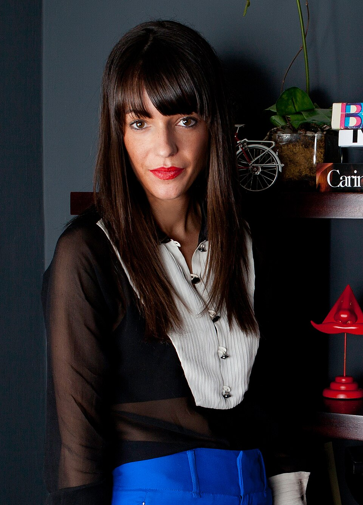
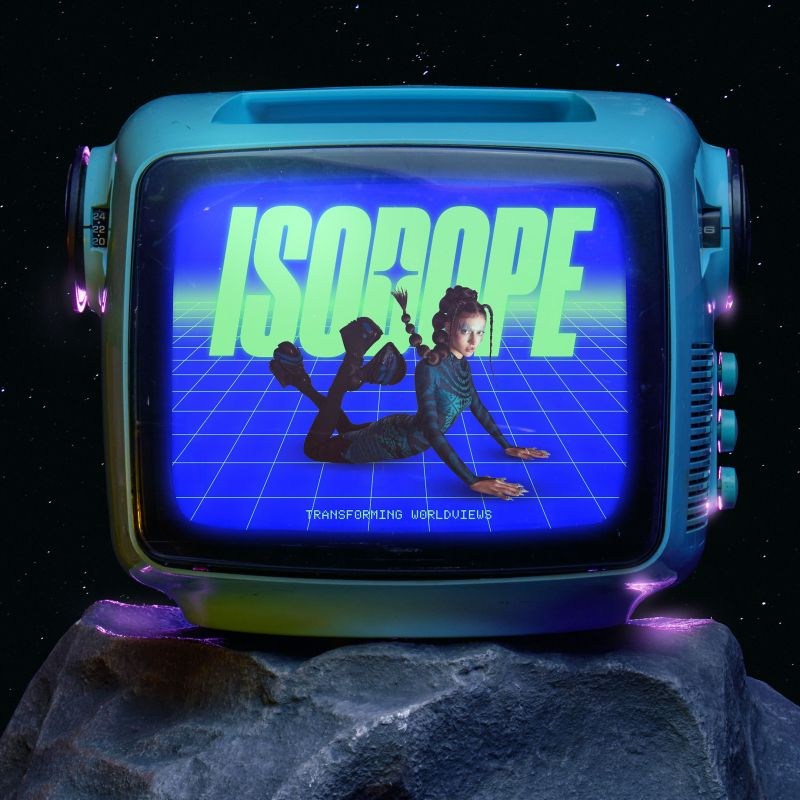
Pum Lefebure
Creative Direction / AdvertisingWhy they're established
Co-founder and Chief Creative Officer of Washington, D.C. agency Design Army (clients include Adobe, Disney, Netflix, Bloomingdale's, PepsiCo); an internationally awarded creative director whose studio produced the fully AI-generated 'Adventures in A-Eye' campaign for Georgetown Optician.
Verify · commarts.com ↗“I love working with AI because of the speed. Once you get the formula down, it's like magic.”
— Pum Lefebure, commarts.com ↗

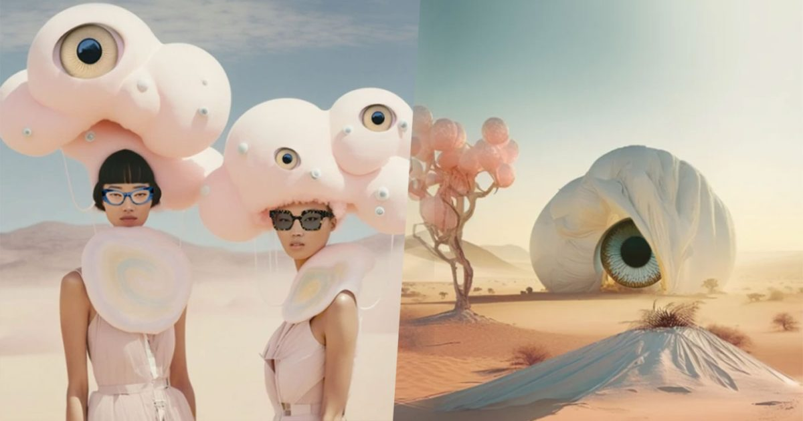
Christoph Niemann
Editorial IllustrationWhy they're established
Internationally renowned illustrator and graphic/editorial designer; creator of more than two dozen New Yorker covers, longtime New York Times Magazine contributor, and subject of an episode of Netflix's 'Abstract: The Art of Design'.
Verify · en.wikipedia.org ↗“When I first learned about computer tools in art school, I was elated. Despite my wariness of AI, I've found some good uses for it.”
— Christoph Niemann, kottke.org ↗
Seba Cestaro
Editorial IllustrationWhy they're established
Editorial illustrator based in Buenos Aires whose selected clients include The New Yorker, The New York Times, Netflix, Wired, The Guardian, Google and Adobe; represented by Jacky Winter.
Verify · sebacestaro.com ↗“It sparked my curiosity and compelled me to explore and understand what was happening in this field.”
— Seba Cestaro, itsnicethat.com ↗
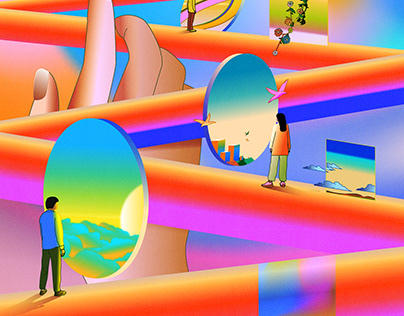
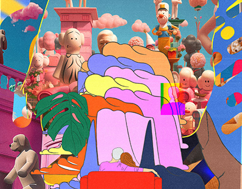
Beeple (Mike Winkelmann)
Digital ArtWhy they're established
Digital artist behind 'Everydays: The First 5000 Days,' which sold at Christie's for $69.3 million in 2021; one of the most-followed digital artists working today.
Verify · en.wikipedia.org ↗“For those who have not checked it out yet @midjourney is pretty f***ing insane. Gonna be really interesting to see how these amazing new AI tools affect art moving forward when you can literally just type a few words and make something.”
— Beeple, x.com ↗
Refik Anadol
Media Art / AI Data ArtWhy they're established
Turkish-American media artist and pioneer of AI/data art; founder of the Los Angeles-based Refik Anadol Studio (2014), former Google artist-in-residence, and creator of the solo AI installation 'Unsupervised' exhibited at the Museum of Modern Art (MoMA).
Verify · wipo.int ↗“What happens if a machine can dream and, if it can, who defines what is real and what is not?”
— Refik Anadol, wipo.int ↗
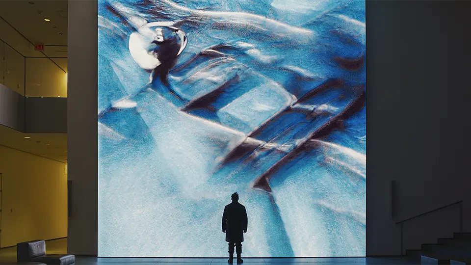
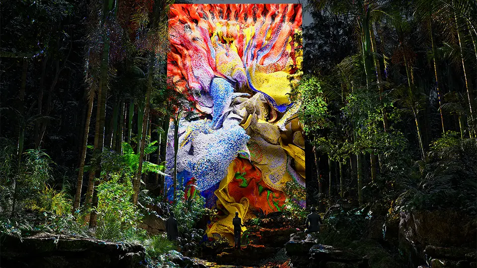
Paul Trillo
Film / Motion DirectionWhy they're established
Award-winning director and visual artist whom OpenAI commissioned to create the first official Sora-generated music video (Washed Out's 'The Hardest Part'); a longtime experimental filmmaker known for inventive camera techniques.
Verify · forbes.com ↗“What is unique about AI is that it's this more fluid, organic process where you're ideating... That's what's been really exciting for me: you can actually spend more time trying to craft that story.”
— Paul Trillo, forbes.com ↗
Brian Collins
Brand DesignWhy they're established
Co-founder and Chief Creative Officer of COLLINS, one of the most awarded independent branding companies in the U.S., whose identity work includes Spotify, Dove and Equinox; former Executive Creative Director of the Brand Integration Group at Ogilvy.
Verify · brandingmag.com ↗“So, I'm neither excited nor nervous. I'm relieved. It lets us focus on what matters: using every tool available to create work that's unignorable.”
— Brian Collins, designweek.co.uk ↗
Max Ottignon
Brand DesignWhy they're established
Co-founder of Ragged Edge, an independent London brand agency known for identity work for challenger brands including Wise, Depop, Papier and GoCompare; a frequent conference speaker (OFFF, Upscale) on branding and distinctiveness.
Verify · creativeboom.com ↗“It doesn't make our projects faster, it doesn't make them cheaper, doesn't make them more efficient, but it makes them better.”
— Max Ottignon, creativeboom.com ↗
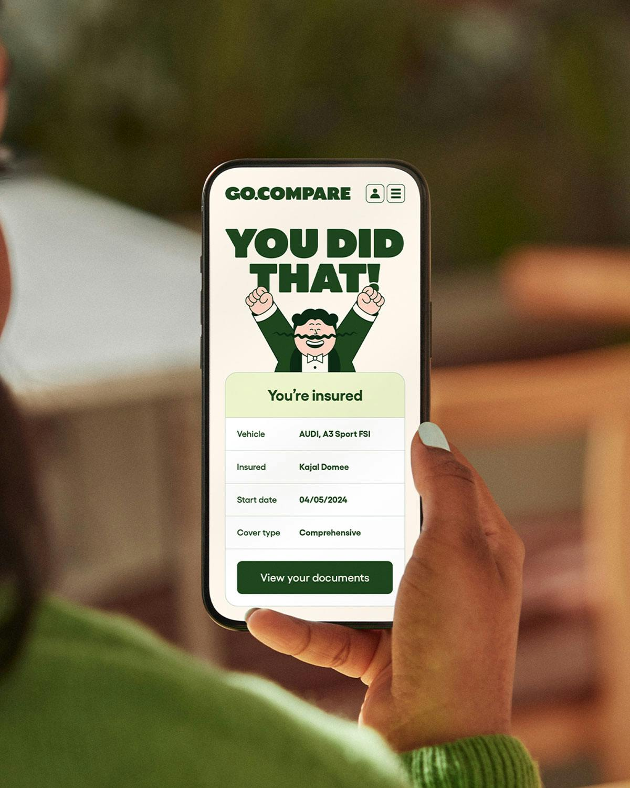
Bradley G. Munkowitz (GMUNK)
Motion Graphics / Design DirectionWhy they're established
American motion-graphics design director and artist with 20+ years in the field; led the team that designed the holographic screen-graphics/UI for the sci-fi feature Tron: Legacy.
Verify · cgchannel.com ↗“Until about a year ago, there was one way to achieve these types of effects. Now with AI and the power of the Z8 Fury, there are ten ways to do it, and the results are all incredible.”
— Bradley G. Munkowitz, thisiscolossal.com ↗
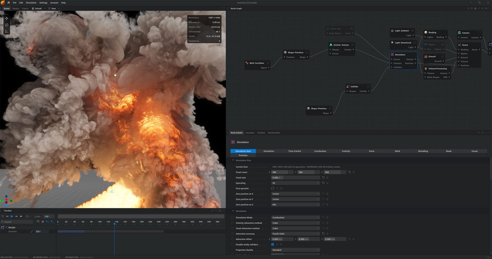
Chad Nelson
Creative Direction / FilmWhy they're established
Award-winning creative director with ~25 years of experience, now a Creative Specialist at OpenAI who worked on the Sora launch and directed the AI-made short films 'Critterz' (imagery generated with DALL·E).
Verify · c21media.net ↗“I was truly floored. I wouldn't say it was the greatest monster design I've ever seen. But what it did do is it captured wonder.”
— Chad Nelson, zackarnold.com ↗
Karen X. Cheng
Creative Direction / Viral AI CampaignsWhy they're established
Director and creative known for viral generative-AI creative campaigns; advisor to Runway, collaborator with Adobe Firefly, and a featured creator by NVIDIA in its 'In the NVIDIA Studio' series.
Verify · blogs.nvidia.com ↗“I never had much drawing skill before, so I feel like I have art superpowers. Human plus AI is going to be better than AI alone for a very, very, very long time.”
— Karen X. Cheng, blogs.nvidia.com ↗
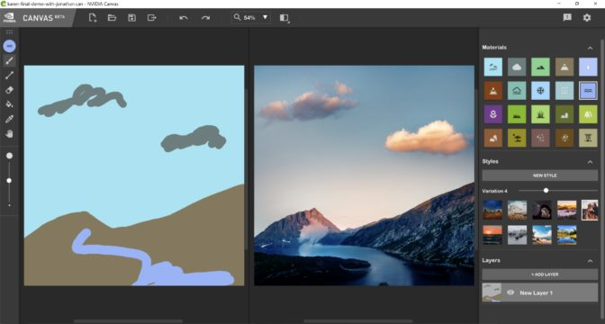
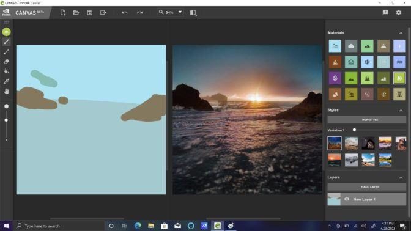
Aurore Lechien
Brand / Art DirectionWhy they're established
Design Director at Base Design (Brussels), an internationally recognized branding studio; provided creative direction on the AI-assisted La Monnaie opera 2023-24 season campaign.
Verify · itsnicethat.com ↗“It was so fun. We just had fun for hours.”
— Aurore Lechien, itsnicethat.com ↗